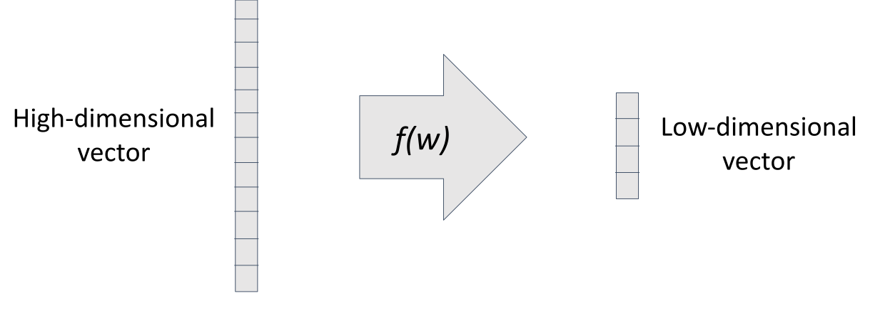
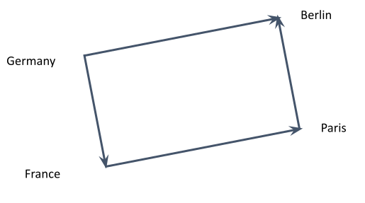

Mathematical model for representing text as a vector of numbers.
Enables linear algebra to analyse text.
A term-document matrix is a matrix where each row represents a term and each column represents a document.
| Document 1 | Document 2 | Document 3 | |
| Term 1 | 1 | 0 | 1 |
| Term 2 | 0 | 1 | 1 |
| Term 3 | 1 | 1 | 0 |
Python example
term_document_matrix = np.zeros((len(vocabulary), len(documents)))
for doc in documents:
for term in doc:
term_document_matrix[term][doc] += 1Cosine similarity (angle between vectors)
Euclidean distance (distance between vectors)
from sklearn.metrics.pairwise import cosine_similarity, euclidean_distance
cosine_similarity(term_document_matrix[0], term_document_matrix[1])
euclidean_distance(term_document_matrix[0], term_document_matrix[1])Very large
Very sparse (many zeros)
Not very informative
Instead of a large vector compress all this information into a small vector.
Word vectors capture linguistic regularities
vec(Berlin) ≃ vec(Germany) + vec(Paris) - vec(France)
A language model is a function that calculates the likelihood of a string of words.
P("this string") = 0.0001
The probability of text is higher if the text is:
Languages models can generate text
\[ \max_{w \in \mathrm{vocabulary}} p(\mathrm{what~is~the~next~} w)\]
Repeating this allows us to generate text
Most models are trained autoregressively
Can you guess the word?
Most popular architecture at the moment
Why transformers?
Natural language is hard to do math with
Generative Pre-Trained Transfomer
Large (>10B parameter) models demonstrate emergent properties
Using the correct initial text (prompt) we can extra information from the language model
Huggingface HubInput:
Classify the text into neutral, negative or positive. Text: I think the vacation is okay. Sentiment:
Output:
positive
Input:
workable: work edible: eat visible: see readble:
Ouput:
read
Input:
Q: The odd numbers in this group add up to an even number: 4, 8, 9, 15, 12, 2, 1. A: Adding all the odd numbers (9, 15, 1) gives 25. The answer is False. The odd numbers in this group add up to an even number: 15, 32, 5, 13, 82, 7, 1.
Output:
all the odd numbers (15, 5, 13, 7, 1) gives 41. The answer is False.
Input:
is 9 + 10?
Output:
21
Input:
What is 9 + 10? 21 Do you think 21 is the correct answer?
Output:
No